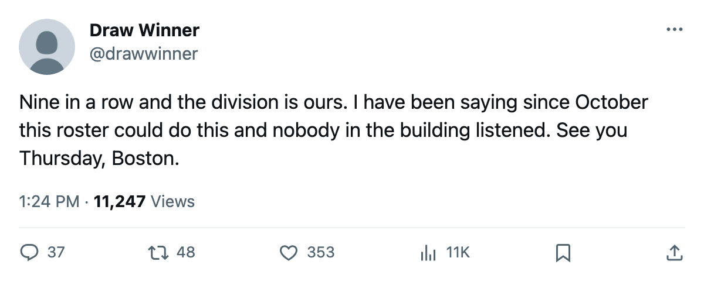

TOR
TORLEAFS 3, BLUE JACKETS 1: Nine straight on 15 shots, and Buffalo visits Tuesday on a 4-game sweep
Toronto sits 32 points clear of Boston at 120 points and hosts the Sabres tomorrow trailing 0-4-0 in the season series
 Sam OkaforLeafs beat reporter · Queen City Telegram
Sam OkaforLeafs beat reporter · Queen City Telegram
Toronto won its ninth straight on Sunday, beating  Columbus Blue Jackets 3-1 on the road. The Maple Leafs fired 15 shots against 30 and took two points out of Columbus anyway.
Columbus Blue Jackets 3-1 on the road. The Maple Leafs fired 15 shots against 30 and took two points out of Columbus anyway.
The streak is the longest in the league. Toronto sits at 120 points in 74 games, 32 ahead of  Boston Bruins at the top of the Northeast division. The goal differential reads 350 for, 175 against.
Boston Bruins at the top of the Northeast division. The goal differential reads 350 for, 175 against.
Buffalo visits on a 4-game sweep
 Buffalo Sabres arrives on Tuesday trailing Toronto 0-4-0 this season, outscored 29-3 across the four meetings. Buffalo sits at 74 points in 73 games, 46 back, with a 14-23 road record.
Buffalo Sabres arrives on Tuesday trailing Toronto 0-4-0 this season, outscored 29-3 across the four meetings. Buffalo sits at 74 points in 73 games, 46 back, with a 14-23 road record.
Four of the next five on the road
The Maple Leafs play Boston Bruins on Thursday,  Carolina Hurricanes on Friday,
Carolina Hurricanes on Friday,  New York Islanders the following Monday, and
New York Islanders the following Monday, and  Washington Capitals at home the day after, before closing at
Washington Capitals at home the day after, before closing at  New Jersey Devils on April 1. Two of those are division games. Toronto is 28-9 on the road this season.
New Jersey Devils on April 1. Two of those are division games. Toronto is 28-9 on the road this season.
Five on the Bureau's risers
The Bureau's Development Index lists 5 Toronto players among its risers this edition.  Marian Gaborik99 leads the league at +6 form, carrying 87 points and 49 goals through 74 games on a $1.10M contract that runs one more season.
Marian Gaborik99 leads the league at +6 form, carrying 87 points and 49 goals through 74 games on a $1.10M contract that runs one more season.  Barret Jackman86 sits at +5 with 35 points in 72 games.
Barret Jackman86 sits at +5 with 35 points in 72 games.  Rostislav Klesla87,
Rostislav Klesla87,  Rick Nash85 and
Rick Nash85 and  Brad Richards89 also appear, at +5, +5 and +4.
Brad Richards89 also appear, at +5, +5 and +4.
On the other end, Mikael Tellqvist73 is the Bureau's deepest faller at -3, with his overall reading 74 against a base of 77. He has played 11 games as the backup goaltender. Ed Taylor told The Tunnel's Jan Kowalczyk on what the calendar has as the trade deadline that the club had "a few more potential deals on the table." No move landed.
